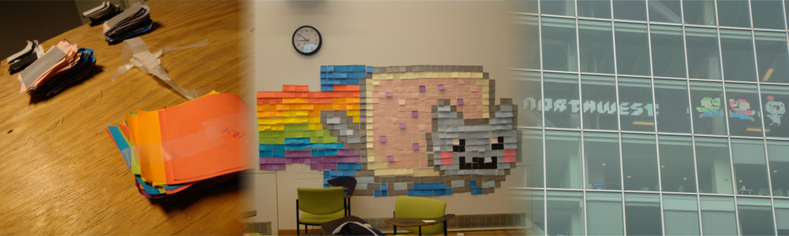

Energizing the Future!
Operation: Interdisciplinary-Inaction
Background
The Northwest Corner building at Columbia University, aptly located on the northwest corner of the main campus, is the newest building in the school's campus, having been opened only four years ago, is touted as a "transparent pathway between campus and community" by school president Lee. C. Bollinger. It was built as an interdisciplinary research building where biology, chemisty, physics, and enginerring labs could coexhist in harmony, furthering scientific advancement through the sharing of ideas and collaboration. It was a grand idea, and even literally connected the old physics building, Pupin, with the chemistry building, Havemeyer. In theory, the whole thing was an amazing idea for collaboration and unity, topping the campus with a sleek, modern building that pushes the boundries of science in every way.
At least, that was the plan.
NoCo as it stands
Rienzi's 3rd Law: "For every inaction, there is a reaction"
Within the first two years of attending Columbia, I would look upon the building, and noticed that what appeared to be four floors of the building were completely unoccupied. More than that, they seemed to be completely un-built! If you notice in the above picture, there were even boards of wood in the windows. After a bit of research and asking around, I found that the plan was to have 7 double-floors of space for labs. But because of Columbia bureaucracy, poor planning, and who knows what else, two of these double-floors (yes, that's four full floors!) were completely empty! It bothered me to see such a great idea be tarnished by some ineffectual Columbia administration, especially when labs really needed the space (and four floors in Manhattan, no less)! There was nearly a 30% chunk of the building smack in the center just empty.
As I passed by the building one day, looking at the windows, I noticed that on one of the top floors one of the labs had made a very large Boo from the Mario games on the window out of post-its. This gave be a great idea! I thought it might be nice to beautify the building a little bit by making a post-it art mural on the windows of the unoccupied floors. I called it Operation: Interdisciplinary-Inaction. So, I started buying up post-its (those things were expensive, so I really couldn't cover all four floors), and organized a bunch of friends to help me plan and set up the operation. Then, on the three year anniversary of the building opening (and not being used), I went up and created the mural I had planned out! The results speak for themselves.

Setting up the text I don't remember the font used

The first text setup. We decided to use blue for the last letter just because (This was before Kanye's kid)

Starting the Nyancat

Almost done

Last finishing touches

We had to make it boxy originally so that I could take it down and put it up on the windows again in the right order

Once it was finished, I moved to Noco to finish the job

As you can see, the floor was completel unfurnished

I think I used more than 4000 post-its

Starting the setup

Completely Empty

Nyan Cat looking Good!

I had music playing and danced a little too

Extending the tail

The tail at the end

Full shot of the Nyan Cat! It looked gorgeous.

I still had a lot of white and grey post-its so I decided to fo Gomez from the game Fez

It wouldn't be complete without Mario!

Luigi too! (Note that I couldn't find brown post-its so I had to make due with what I had)

The Three dudes!

I was proud of my work

And one with my cat!

It looked pretty awesome that night

Closeup of NYAN

The next day

A closeup. It turned out amazingly!

The tail on Nyancat was awesome

Amd my little guys seemed so happy

Mario, Luigi and Gomez

Left a little signature in the corner

One final shot of my work

If you look closely, you can still see the boo in the top right corner of the windows that inspired me originally
Click here to see it bigger!
Epilogue
In true, blue, Columbia fashion, my art project was not well-received, and only lasted a few days. But that's fine. At the very least, it was a statement. And, though it wasn't because of my project, they finally started building up those floors last year. Hopefully the labs will be open by April or so of this year, 2015. Either way, it was a fun, tongue-in-cheek little project that I'm proud of.
Copyright 2014-2015 Energize Laboratories Inc. All Rights Reserved